This is PROCESSOR as it is today, before your spacing pass: what it looks like, the numbers that set its spacing, and where it's tightest. The playground lets you move those numbers live in DevTools and copy back what you settle on.
Paste into the console (F12 → Console) on processor.v3ktr.com or a local copy. It only changes what you see in that tab; reload to clear. Slider positions are remembered in your browser, and Reset puts them back. The checkbox turns on the new 2px outlines for toggles and chips.
/* V3KTR PROCESSOR · spacing playground (baseline v0.570.0)
Paste into the DevTools console on PROCESSOR (live or local). Adds a slider panel, bottom left.
Every slider drives one of PROCESSOR's real spacing rules; the starting values ARE the live values.
Nothing is saved to the app: reload to clear. Your slider positions are remembered in this browser
(localStorage) so a reload keeps them; "Reset" puts everything back.
"Copy" puts a list of what you changed on the clipboard (and in the console) to paste back to Claude. */
(() => {
const ID = 'v3ktr-spacing-playground';
document.getElementById(ID)?.remove();
document.getElementById(ID + '-css')?.remove();
// [key, label, live value, min, max, CSS it drives (use {v} for the value in px)]
const KNOBS = [
['pad', 'Panel padding (--pad)', 12, 6, 28, ':root{--pad:{v}px}'],
['sidew', 'Side panel width', 332, 300, 440, ':root{--side-w:{v}px}'],
['railw', 'Rail width', 128, 110, 190, ':root{--rail-w:{v}px}'],
['btny', 'Button padding · vertical', 5, 2, 12, '.inline-btn,.seg button,.ui-btn,.looks-act-btn{padding-top:{v}px;padding-bottom:{v}px}'],
['btnx', 'Button padding · horizontal', 10, 5, 20, '.inline-btn,.seg button,.ui-btn,.looks-act-btn{padding-left:{v}px;padding-right:{v}px}'],
['seggap', 'Gap between option buttons', 4, 1, 14, '.seg{gap:{v}px}'],
['segm', 'Space above/below option groups', 10, 2, 24, '.seg{margin-top:{v}px;margin-bottom:{v}px}'],
['rowh', 'Row height (sliders, toggles, blend)', 28, 22, 44, '.scrub,.tog-row,.blend-row{height:{v}px}'],
['rowgap', 'Space between rows', 5, 1, 14, '.scrub{margin:{v}px 0}.tog-row,.blend-row{margin:{v}px 0}'],
['secb', 'Space after a section', 10, 2, 32, '.param-section{padding-bottom:{v}px}'],
['labt', 'Space above section heads', 11, 2, 28, '.sec-label{margin-top:{v}px}'],
['labb', 'Space below section heads', 7, 2, 20, '.sec-label{margin-bottom:{v}px}'],
['layy', 'Layer padding · vertical', 7, 3, 16, '.layer{padding-top:{v}px;padding-bottom:{v}px}'],
['laygap', 'Gap between layers', 2, 0, 12, '.layer{margin:{v}px 0}'],
['menux', 'Menu item padding (top bar)', 9, 4, 18, '.menu{padding-left:{v}px;padding-right:{v}px}'],
];
const OUTLINE = '.inline-btn.tog,.filter-chip{border:2px solid #757575}'; // the settled app standard: 2px, roomier
let state = {};
try { state = JSON.parse(localStorage.getItem(ID) || '{}'); } catch (e) {}
const val = (k) => (state[k] ?? KNOBS.find((n) => n[0] === k)[2]);
const css = document.createElement('style');
css.id = ID + '-css';
document.head.appendChild(css);
const apply = () => {
css.textContent = KNOBS.filter(([k, , live]) => val(k) !== live).map(([k, , , , , rule]) => rule.replaceAll('{v}', val(k))).join('\n') + (state.outline ? '\n' + OUTLINE : '');
try { localStorage.setItem(ID, JSON.stringify(state)); } catch (e) {}
window.dispatchEvent(new Event('resize')); // let the canvas re-fit if the panels changed width
};
const S = (el, s) => (Object.assign(el.style, s), el);
const box = S(document.createElement('div'), { all: 'initial', position: 'fixed', left: '12px', bottom: '34px', zIndex: 2147483647, width: '330px', maxHeight: '70vh', overflow: 'auto', background: '#161616', color: '#cfcfcf', font: '11px/1.4 "JetBrains Mono", monospace', boxShadow: '0 8px 30px rgba(0,0,0,.6)', border: '1px solid #3a3a3a' });
box.id = ID;
const head = S(document.createElement('div'), { display: 'flex', alignItems: 'center', gap: '6px', padding: '8px 10px', background: '#212121', position: 'sticky', top: '0', cursor: 'pointer' });
head.innerHTML = '<b style="color:#f4f4f4;letter-spacing:.12em;flex:1">SPACING · v0.570 base</b>';
const btn = (t) => S(Object.assign(document.createElement('button'), { textContent: t }), { all: 'initial', font: 'inherit', color: '#1c1c1c', background: '#00e5a0', padding: '3px 7px', cursor: 'pointer', textTransform: 'uppercase' });
const copy = btn('Copy'), reset = btn('Reset'), fold = btn('–');
S(reset, { background: '#3a3a3a', color: '#f4f4f4' }); S(fold, { background: '#3a3a3a', color: '#f4f4f4' });
head.append(copy, reset, fold);
const body = S(document.createElement('div'), { padding: '6px 10px 10px' });
box.append(head, body);
const rows = {};
for (const [k, label, live, min, max] of KNOBS) {
const row = S(document.createElement('label'), { display: 'block', margin: '8px 0 0' });
const top = S(document.createElement('div'), { display: 'flex', justifyContent: 'space-between' });
const name = document.createElement('span'); name.textContent = label;
const out = document.createElement('span');
const r = Object.assign(document.createElement('input'), { type: 'range', min, max, step: 1, value: val(k) });
S(r, { width: '100%', accentColor: '#00e5a0', margin: '2px 0 0' });
const show = () => { const v = +r.value; out.textContent = v === live ? `${v}px` : `${live} → ${v}px`; out.style.color = v === live ? '#8a8a8a' : '#00e5a0'; };
r.addEventListener('input', () => { state[k] = +r.value; if (+r.value === live) delete state[k]; show(); apply(); });
top.append(name, out); row.append(top, r); body.append(row); rows[k] = { r, show, live }; show();
}
const ol = S(document.createElement('label'), { display: 'flex', gap: '6px', alignItems: 'center', margin: '12px 0 0', color: '#f4f4f4' });
const cb = Object.assign(document.createElement('input'), { type: 'checkbox', checked: !!state.outline });
cb.addEventListener('change', () => { state.outline = cb.checked || undefined; apply(); });
ol.append(cb, document.createTextNode('2px outlines on toggles + chips (new standard)'));
body.append(ol);
reset.onclick = (e) => { e.stopPropagation(); state = {}; for (const k in rows) { rows[k].r.value = rows[k].live; rows[k].show(); } cb.checked = false; apply(); };
copy.onclick = (e) => {
e.stopPropagation();
const lines = KNOBS.filter(([k, , live]) => val(k) !== live).map(([k, label, live]) => `- ${label}: ${live}px → ${val(k)}px`);
if (state.outline) lines.push('- 2px outlines on toggles + chips: on');
const text = `PROCESSOR spacing playground (baseline v0.570.0, window ${innerWidth}×${innerHeight})\n` + (lines.join('\n') || '- no changes');
console.log(text);
navigator.clipboard?.writeText(text).then(() => (copy.textContent = 'Copied'), () => (copy.textContent = 'See console'));
setTimeout(() => (copy.textContent = 'Copy'), 1500);
};
head.onclick = () => { const hide = body.style.display !== 'none'; body.style.display = hide ? 'none' : ''; fold.textContent = hide ? '+' : '–'; };
document.body.appendChild(box);
apply();
console.log('Spacing playground loaded. Remove it: document.getElementById("' + ID + '").remove(); document.getElementById("' + ID + '-css").remove()');
})();
Sample image, three effects in the stack. Panels at 2× resolution.
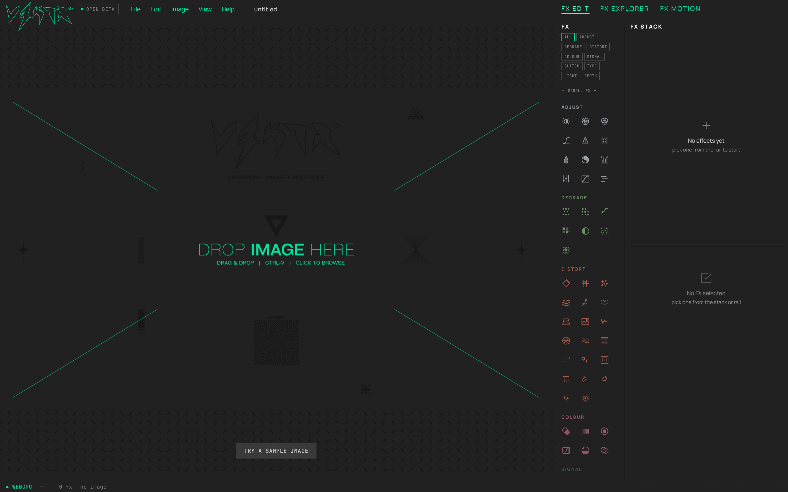
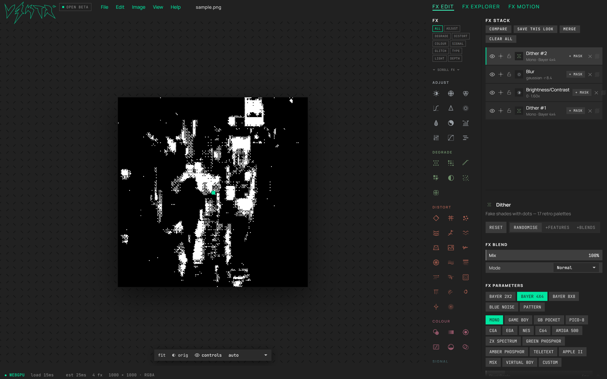
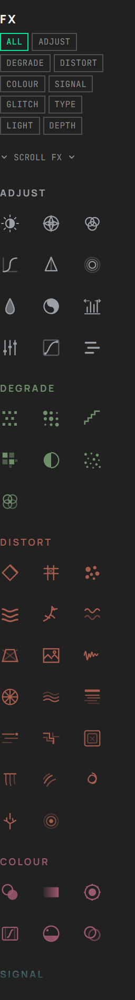
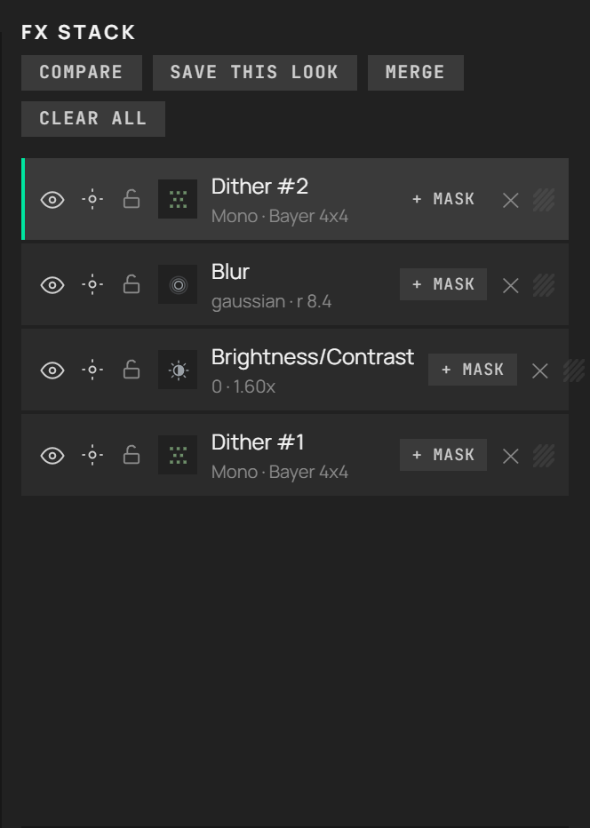
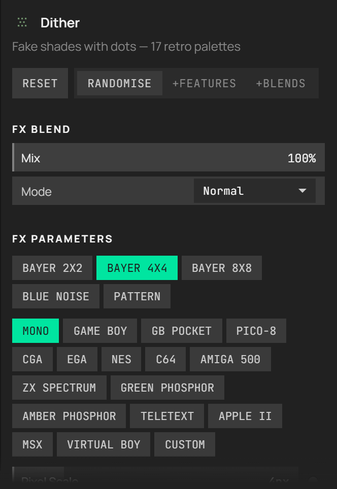
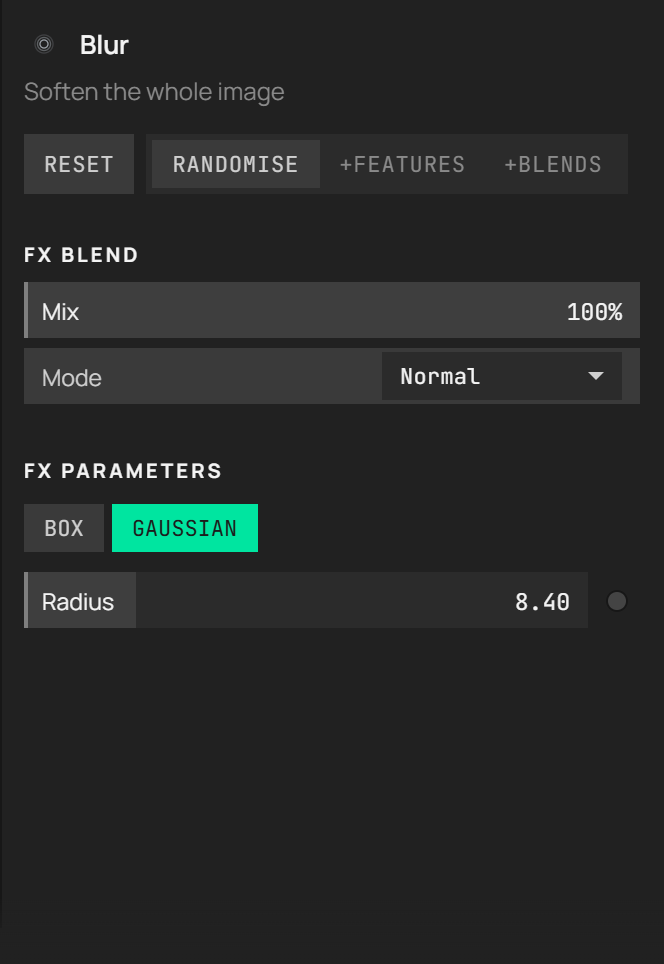
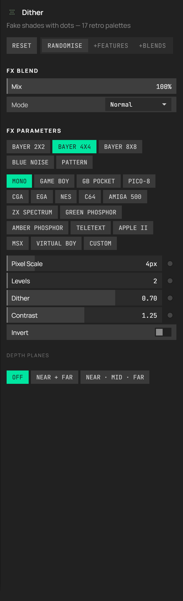
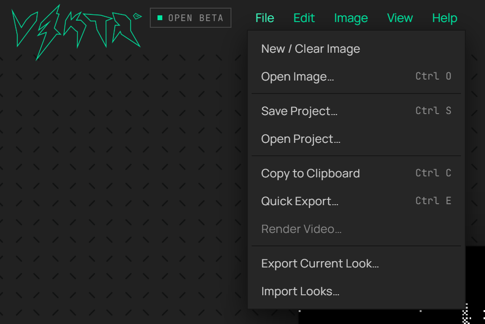
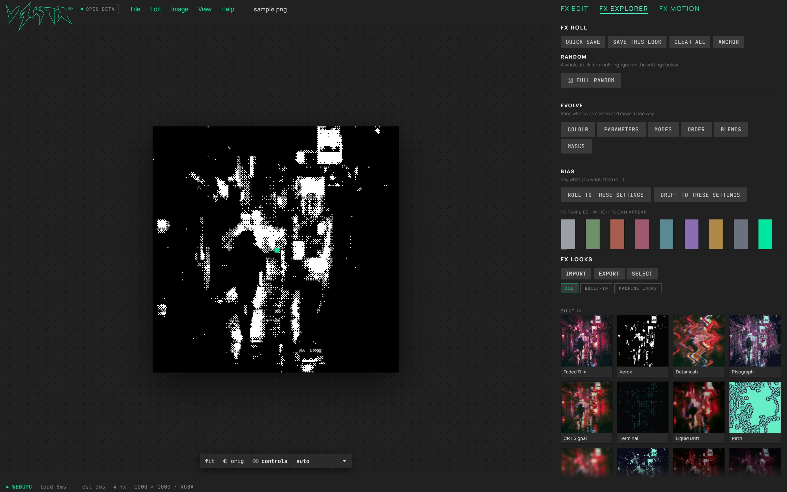
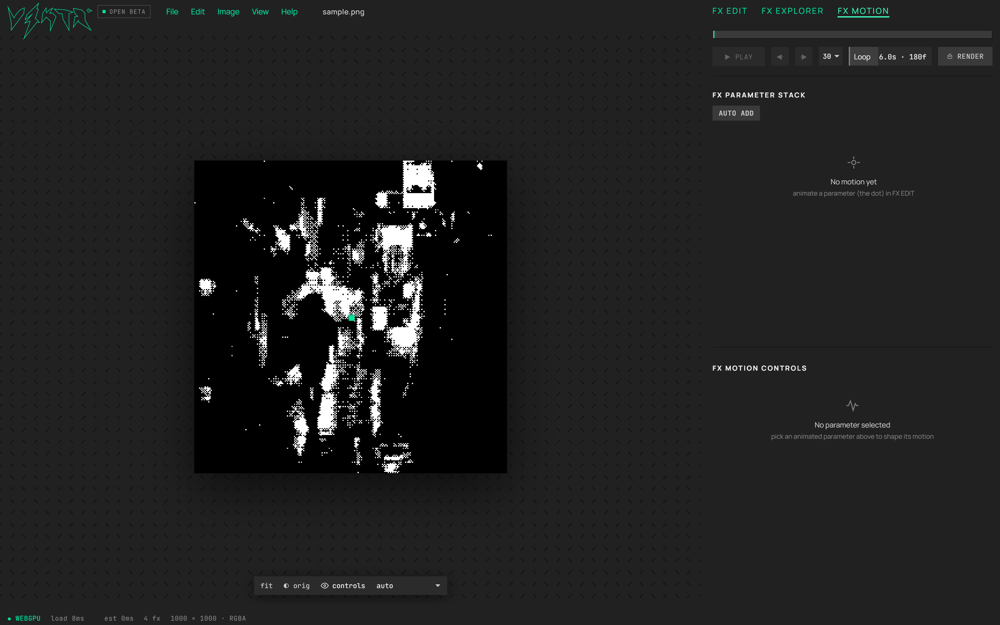
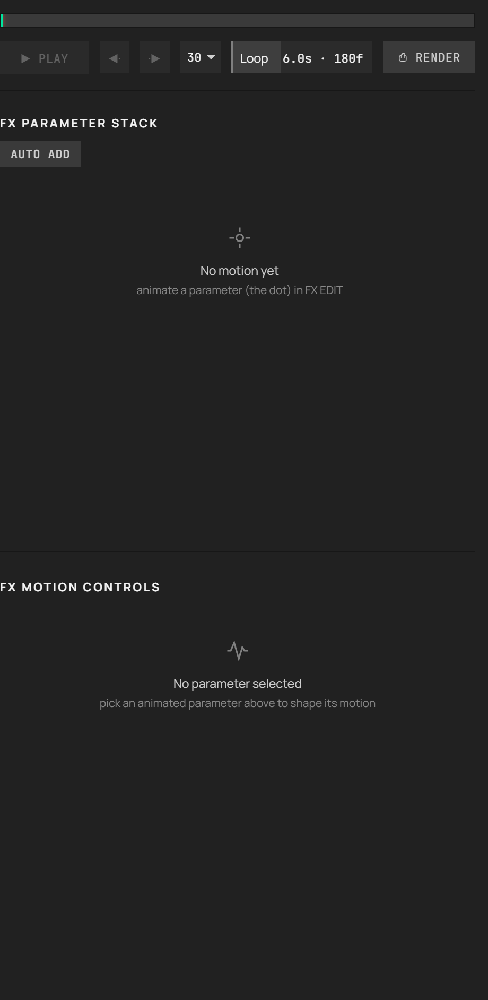
Neighbouring controls closer than 4px, measured in the browser, and what each means for the pass. Nothing is cut off: no text in the UI is currently truncated.
| Gap | Between | Where | What it means |
|---|---|---|---|
| 0px | RANDOMISE ↔ +FEATURES | Parameter panel | A joined group (.roll-group), intentional. With 2px outlines the toggles' outline will sit hard against RANDOMISE; give the group a gap of 2–4px. |
| 1px | Rail icon tiles | Rail | The icon grid has a 1px gap on purpose (126 pairs). The rail is 128px for exactly 3 columns: padding added inside the rail shrinks every tile. |
| 1px | fit · orig · controls · auto | Canvas controls bar | The four canvas controls nearly touch. Easy to space; nothing else depends on them. |
| 2px | Slider ↔ motion dot | Parameter panel | The animate dot beside each slider. Wider panel padding squeezes the slider, not the dot. |
| 2px | Layer ↔ layer | Stack | 2px margin between layers. More spacing here shows fewer layers before the stack scrolls. |
| 2px | File ↔ Edit ↔ … | Top bar | Spacing comes from the menu items' own padding. |
| 3px | Rail group chips | Rail | ALL / ADJUST / … wrap in pairs inside 116px. Wider chips drop to one per row. |
| 3px | Slider ↔ slider ↔ toggle row | Parameter panel | Rows are 5px (sliders) and 3px (toggles) apart; the playground sets both together. |
From PROCESSOR's CSS. Padding is top right bottom left, in px.
| What | Rule | Today | Note |
|---|---|---|---|
| Layout | |||
| Panel padding | --pad | 12px | Used by the stack list and every parameter section. One number moves both. |
| Side panel width | --side-w | 332px | Wider side = smaller canvas. |
| Rail width | --rail-w | 128px | 3 columns of square icon tiles. Widening makes tiles bigger; it does not add columns. |
| Top bar / tabs / status rows | .app grid rows | 36 / 40 / 1fr / 22px | |
| Buttons | |||
| Regular button | .inline-btn, .ui-btn | padding 5 10 · 11px | The workhorse: RESET, RANDOMISE, stack actions. |
| Option button (chips in params) | .seg button | padding 5 10 · 11px · gap 4 | Dither palettes, modes. Wrap onto several rows. |
| Large button | .gen-btn | padding 8 14 | |
| Small button | .inline-btn.sm | padding 3 7 · 9px | + MASK on layers. |
| Toggle (latched) | .inline-btn.tog | padding 5 10 · 1px outline | +FEATURES, +BLENDS. Gets the 2px outline. |
| Group filter chip | .filter-chip / .rail-chip | padding 3 5 · 8px · 1px outline | ALL / ADJUST … on the rail. |
| Parameter panel | |||
| Effect title | .param-title | padding 12 12 8 | |
| Section | .param-section | padding 2 12 10 | FX BLEND, FX PARAMETERS. |
| Section head | .sec-label | 10px · margin 11 0 7 | |
| Slider row | .scrub | height 28 · margin 5 0 | |
| Toggle / blend row | .tog-row, .blend-row | height 28 · margin 3 0 · padding 0 9 | |
| Option group | .seg | gap 4 · margin 10 0 | |
| Randomise group | .roll-group | padding 3 · gap 0 | Buttons touch each other by design. |
| Stack | |||
| Stack list | .stack-list | padding 2 12 4 | |
| Layer row | .layer | padding 7 8 · gap 8 · margin 2 0 | Height 46. |
| Top bar | |||
| Menu item | .menu | padding 4 9 · 12.5px | |
| Top bar | .topbar | padding 0 12 · gap 2 | |
| Workspace tabs | .ws-tabs | gap 22 · 13px | |
Every visible control, grouped by class, as the browser draws it (sample image, three effects, Edit workspace).
| Class | Where | Count | Height | Padding | Font |
|---|---|---|---|---|---|
div.rail-btn | rail | 93 | 38 | 0 0 0 0 | 13px |
button | params | 22 | 24 | 5 10 5 10 | 11px |
div.rail-chip | rail | 10 | 17 | 3 5 3 5 | 8px |
div.menu | topbar | 5 | 25 | 4 9 4 9 | 12.5px |
div.scrub | params | 5 | 28 | 0 0 0 0 | 13px |
span.txt-action | stack | 4 | 20 | 5 10 5 10 | 10px |
div.layer | stack | 4 | 46 | 7 8 7 8 | 13px |
div.eye | stack | 4 | 15 | 0 0 0 0 | 13px |
div.iso-toggle | stack | 4 | 14 | 0 0 0 0 | 13px |
div.lock-toggle | stack | 4 | 14 | 0 0 0 0 | 13px |
div.lname | stack | 4 | 32 | 0 0 0 0 | 12px |
div.lmask | stack | 4 | 18 | 3 7 3 7 | 9px |
div.del | stack | 4 | 17 | 0 0 0 0 | 12px |
button.motion-dot | params | 4 | 28 | 0 0 0 0 | 13.3333px |
div.ws-tab | ws-tabs | 3 | 20 | 0 0 0 0 | 13px |
button. | params | 3 | 24 | 5 10 5 10 | 11px |
div.cc-btn | other | 2 | 26 | 0 8 0 8 | 11px |
button.cs-trigger | other params | 2 | 24 / 26 | 5 9 5 9 | 11px |
button.inline-btn | params | 2 | 24 / 30 | 5 10 5 10 | 11px |
button.inline-btn.tog | params | 2 | 24 | 5 10 5 10 | 11px |
div.cc-btn.mono | other | 1 | 26 | 0 8 0 8 | 11px |
select.cc-select.mono | other | 1 | 1 | 0 6 0 6 | 11px |
input.inline-field | stack | 1 | 27 | 5 8 5 8 | 11.5px |
div.inline-btn | stack | 1 | 24 | 5 10 5 10 | 11px |
div.inline-btn.ghost | stack | 1 | 25 | 5 8 5 8 | 11px |
div.blend-row | params | 1 | 28 | 0 9 0 9 | 13px |
select.blend-select | params | 1 | 1 | 0 22 0 8 | 11px |
div.tog-row | params | 1 | 28 | 0 9 0 9 | 13px |
div.switch | params | 1 | 16 | 0 0 0 0 | 13px |
Built from PTRKMRTN/V3KTR-design · baselines/processor · scripts/processor-baseline.mjs captures, scripts/build-baseline-sheet.mjs builds this page.